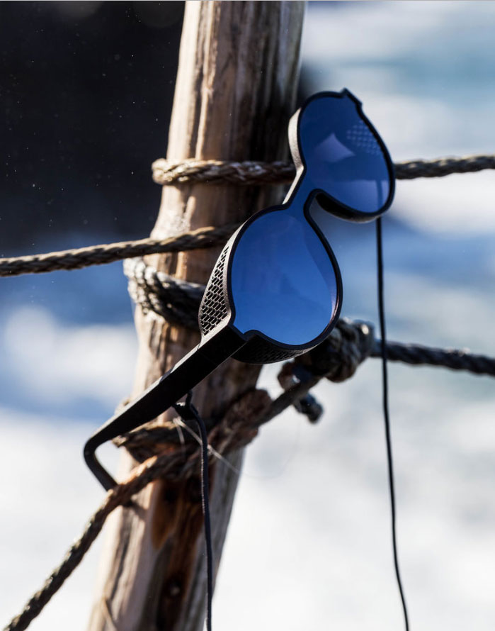

Mizzi Studio
SYFY Design
In an age where we both want to catch up with and invalidate the trends that swirl around our heads, we have to ask ourselves, do we really know what is going on? Does kitsch mean the same thing it did many years ago? What exactly is a fixed gear bike?! One term you may have seen tattooed on the chest of many a web web page, is ‘concept design.’ As a studio, we like to class our selves within the aforementioned description of the modern person: caught up in conflicting zeitgeists, and itching to maintain elements of archaism in our work. Yet we find ourselves falling under the same roof as other artists who define themselves as ‘concept designers’. We don’t simply do branding; interior design; graphic design. Instead, we have come to develop a word for a niche point in commercial art that you now have to ask yourself: what exactly does it mean?
There is no greater example of why this term is so important, than Jonathan Mizzi, the creator of the eponymous Mizzi Studio. He specialises in -you guessed it- concept design! We have included a few examples of his work in this post- perhaps you can already see what stands him apart from his more rigid contemporaries? As you probably know about our studio, we revel in tasks and artists who focus on uniqueness. Mizzi does this. Oh boy, he does! Bold and academic in his designs, he takes simple interior design and branding and turns it into a concept that transcends functionality whilst it also maintaining it as the core of his work. It is this sumptuous slither of a cross section that he teeters on, which makes us addicted to his results. Recently, Mizzi has been focusing on industrial, naval design and incorporating into his projects. This reflects once more, this cross section: beauty meeting functionality, if you will. The final product doesn’t necessarily need to be completely functional- it just needs to absorb and compliment the space it was assigned. Our challenge is to make art that doesn’t overshadow the operative space of a restaurant, bar or cafe etc. We define functionality in this case as this seamless blending of art as an interactive force with a public space. A public space must be receptive to an idea that takes what it means for example, to eat in a restaurant and make it an experience outside of the ordinary